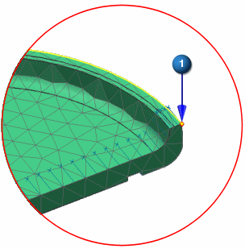
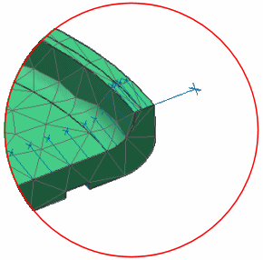

Add the second constraint
You will add a constraint in the Z direction to the edge of the disk.
The User Defined Constraint dialog box is still open from the previous step.
-
Name
Z_constraint
-

 the start point of the polygon edge
the start point of the polygon edge

Note
If you changed the Type Filter to Polygon Face in the previous step, you may need to change it back to No Selection Filter to select this point.
-
DOF3
Fixed

-
Apply

-
Leave the User Defined Constraint dialog box open for the next step.